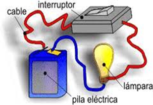

Los operadores eléctricos son todos aquellos que simplemente están compuestos, y su objetivo es un sistema eléctrico, por ejemplo, un circuito básico es de transmitir, transformar o controlar la energía eléctrica. Entre ellos tenemos: una bombilla, un interruptor, etc.
Algunos ejemplos de operadores eléctricos que son conectados a una red eléctrica son: lavadoras, neveras, etc.
Algunos ejemplos de los que funcionan con pilas o baterías son: un control remoto, celulares, etc.

En esta imagen logramos ver un circuito básico, el cual es un operador eléctrico, como podemos observar en la imagen, tiene una lampara o bombilla, una pila, un interruptor y los cables.
A continuación, la función de cada uno:
Lampara / bombilla: La función de esta es transformar la energía eléctrica en luz.
Pila: La función de la pila en este circuito eléctrico es transformar la energía eléctrica que aquella recibe en energía química.
Interruptor: La función del interruptor en el circuito es cerrar o abrir la corriente eléctrica.
Los cables: La función de los cables eléctricos en los circuitos es transmitir y distribuir la energía eléctrica, este es el que conecta todas las partes de un circuito para su funcionamiento.
ESTRUCTURAS ALGORITMICAS
Las estructuras algorítmicas son un conjunto de técnicas y herramientas que se utilizan para diseñar y desarrollar algoritmos eficientes y efectivos. Estas estructuras son fundamentales en la programación y permiten a los desarrolladores crear algoritmos eficientes, legibles y fáciles de mantener. Al utilizar estas técnicas, los algoritmos pueden ser diseñados para resolver problemas complejos de manera más efectiva y con menos errores.